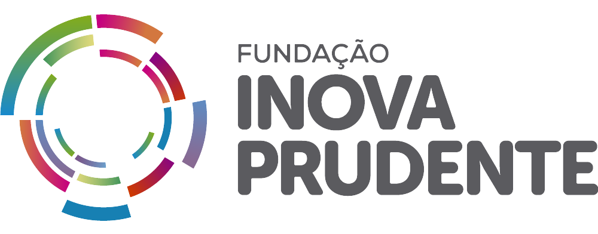
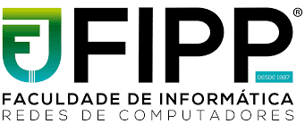

Realização

Presidente Prudente
O Mutirão do Lixo Eletrônico é um evento de grande importância realizado anualmente na cidade de Presidente Prudente, no estado de São Paulo. Este evento tem um papel crucial na conscientização ambiental da população, oferecendo uma maneira segura e responsável para o descarte de resíduos eletrônicos. Com a rápida evolução tecnológica, o volume de e-lixo tem crescido exponencialmente, tornando iniciativas como esta essenciais para a preservação do meio ambiente. Ao participar do Mutirão, os cidadãos de Presidente Prudente têm a oportunidade de contribuir para a redução da poluição, evitar danos à natureza e apoiar a reciclagem e reutilização de materiais, garantindo um futuro mais sustentável para as próximas gerações.

ABREE
A Associação Brasileira de Reciclagem de Eletroeletrônicos e Eletrodomésticos (ABREE) é uma organização pioneira, fundada em 29 de junho de 2011, que desempenha um papel vital na sustentabilidade ambiental do Brasil. Com o compromisso de gerenciar a logística reversa, a ABREE se dedica a assegurar que os produtos eletroeletrônicos e eletrodomésticos pós-consumo sejam coletados, tratados e reciclados de maneira responsável. A associação colabora com fabricantes, varejistas, governos e consumidores para criar um ciclo fechado de produção e consumo, onde cada produto tem seu fim de vida predestinado à reciclagem e reutilização, reduzindo assim o impacto ambiental e promovendo uma economia circular. Desde a sua fundação, a ABREE tem sido um exemplo de liderança e inovação no setor de reciclagem, contribuindo significativamente para o desenvolvimento sustentável do Brasil e para a preservação dos recursos naturais para as futuras gerações.
- 
Inova Prudente
A Fundação Inova Prudente é uma iniciativa visionária da Prefeitura de Presidente Prudente, estabelecida sob a Lei Municipal nº 9.370/2017. Como um centro de inovação credenciado pela Rede Paulista de Centros de Inovação Tecnológica em 2020, ela representa um marco significativo no fomento à inovação e ao empreendedorismo na região. A Fundação Inova Prudente busca integrar empresas, instituições acadêmicas e a sociedade civil em um esforço colaborativo. Seu papel é essencial para criar um ambiente propício onde ideias inovadoras possam florescer, transformando-as em produtos ou processos que beneficiem a comunidade e além. Posterior a isso, a fundação serve como um ponto de encontro para mentes brilhantes, onde o compartilhamento de conhecimento e experiências enriquece todos os envolvidos. Ela é um exemplo de como a colaboração entre diferentes setores pode levar a avanços significativos e gerar um impacto positivo duradouro na sociedade.
- 
FIPP
A Faculdade de Informática de Presidente Prudente (FIPP), originalmente conhecida como Faculdade de Ciências da Computação de Presidente Prudente (FACC-PP), foi estabelecida em 1987 como uma instituição pioneira na área de tecnologia da informação nesta região. Desde então, a FIPP tem sido um marco no ensino superior de computação, contribuindo significativamente para o avanço tecnológico e a formação de profissionais qualificados. Os alunos têm a oportunidade de se envolver em projetos práticos e colaborativos, preparando-os não apenas para o mercado de trabalho, mas também para serem líderes e inovadores na indústria de tecnologia. A instituição continua a expandir suas fronteiras, adaptando-se às mudanças tecnológicas e às necessidades do mercado, garantindo que seus graduados estejam prontos para contribuir e prosperar na sociedade da informação. A FIPP é, sem dúvida, um pilar fundamental na educação tecnológica e um orgulho para Presidente Prudente e para o estado de São Paulo.
-
UNOESTE
A Universidade do Oeste Paulista (Unoeste) destaca-se como um farol de conhecimento e inovação no oeste paulista, sendo a maior instituição de ensino superior da região. Localizada na vibrante cidade de Presidente Prudente, a Unoeste é um marco na paisagem educacional, não apenas pela sua imponente presença física, mas também pelo seu impacto acadêmico e cultural. Além disso, a expansão da Unoeste para outras cidades, com a inauguração de novos campi em Jaú e Guarujá, reflete o seu crescimento e a sua visão de futuro. Esses novos espaços permitem que a universidade estenda seu alcance educacional, oferecendo oportunidades de ensino superior de alta qualidade para um número ainda maior de estudantes. Com um leque amplo de cursos e programas, a Unoeste continua a moldar as mentes que irão liderar e transformar o futuro, não só de Presidente Prudente e região, mas de todo o Brasil e, potencialmente, do mundo. É um lugar onde a tradição e a modernidade se encontram para criar um ambiente de aprendizado dinâmico e inspirador.